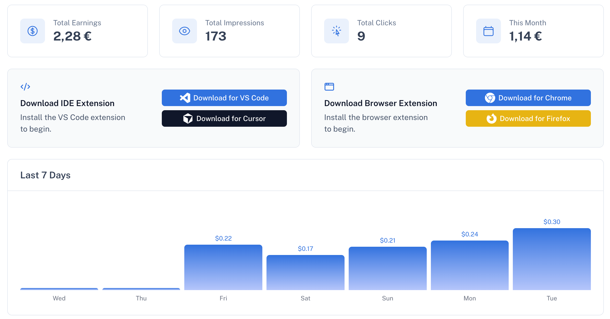
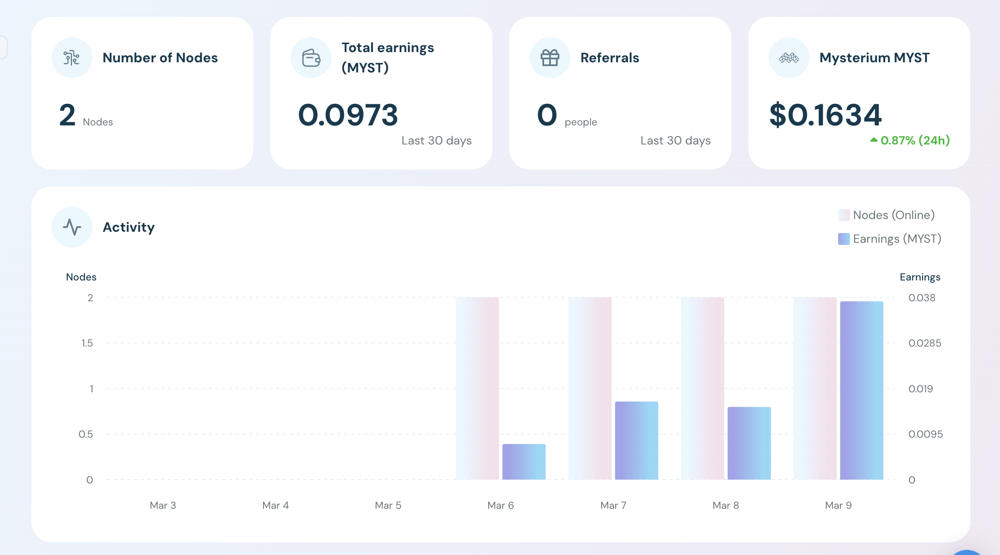

前几天在寻找被动收入的办法，确实很少。说两个无意间看到、收入非常少、聊胜于无的。
通过邀请链接进入的话，我会获取 0.5 美元，被邀请的账户会获取的 0.25 美元。
这个插件和平台只对程序员有效。我们每天都会在编辑器里用 AI 写代码，而这个插件的广告只会在 AI 思考的时候出现。相信在写代码的程序员能理解我在说什么。

我试用了几天下来，大概每天 0.5 美元的广告费，满 50 美元可以提现。算下来一个月大概可以有 20 美元的广告费，我现在用的是 GitHub Copilot Pro+ 的套餐，一个月的订阅费是 39 美元，也就是广告费可以抵扣回一半的订阅费。
另一个是 MystNodes。如果有闲置的 VPS 或者云服务器，可以在上面一键启动一个节点：
docker run --cap-add NET_ADMIN \
-d \
-p 4449:4449 \
--name myst \
-v ~/myst-data:/var/lib/mysterium-node \
--restart unless-stopped \
mysteriumnetwork/myst:latest \
service --agreed-terms-and-conditions
不过这个平台的收入更加少的可怜，就是赚点共享流量费用而已。这么点收入几乎等于没有。
